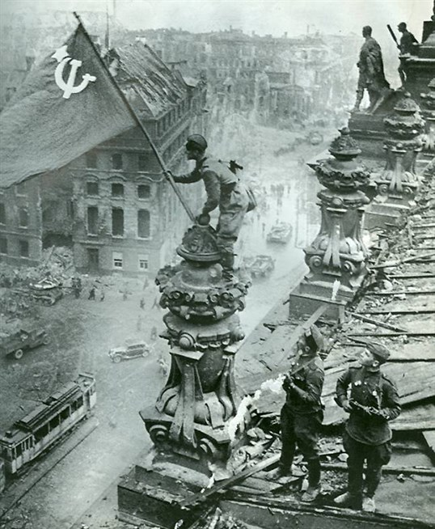

Берли́нская опера́ция — стратегическая наступательная операция советских войск, проведенная с 16 апреля по 8 мая 1945 года на завершающем этапе Великой Отечественной войны. Советские войска прорвали оборону немецких войск на реках Одер, Нейсе и Зеловских высотах, окружили группировки немецких войск в Берлине и юго-восточнее Берлина, а затем ликвидировали их. 30 апреля 1945 года советские войска штурмом овладели рейхстагом; 2 мая остатки берлинского гарнизона капитулировали. 8 мая представители германского командования подписали в Берлине акт о безоговорочной капитуляции вооруженных сил Германии.
В Берлинской операции приняли участие войска Второго Белорусского фронта (К.К. Рокоссовский), Первого Белорусского фронта (Г.К. Жуков), Первого Украинского фронта (И.С. Конев). Ранее, в январе-марте 1945 года советские войска разгромили вражеские группировки в Восточной Пруссии, Польше, Восточной Померании и, выйдя на широком фронте к рекам Одер и Нейсе, глубоко вклинились на территорию Германии. На западном берегу реки Одер были захвачены плацдармы, в том числе в районе Кюстрина. Одновременно с запада, не встречая организованного сопротивления, наступали англо-американские войска. Гитлеровская клика, надеясь на разногласия между союзниками, принимала все меры, чтобы задержать продвижение советских войск на подступах к Берлину и договориться с англо-американскими правящими кругами о сепаратном мире.
На берлинском направлении немецко-фашистское командование сосредоточило крупную группировку в составе группы армий «Висла» (3-я танковая армия, 9-я армии) генерал-полковника Г. Хейнрици (с 30 апреля генерала пехоты К. Типпельскирха) и 4-й танковой и 17-й армий группы армий «Центр» генерал-фельдмаршала Ф. Шернера. Всего немецкие войска насчитывали около 1 млн. человек, 10,4 тысячи орудий и минометов, 1530 танков и штурмовых орудий, свыше 3300 самолетов. На западных берегах рек Одер и Нейсе было создано три оборонительные полосы глубиной до 20-40 км. Берлинский оборонительный район состоял из трех кольцевых оборонительных обводов, все крупные здания в городе были превращены в опорные пункты, улицы и площади перекрыты баррикадами.
Для наступления на берлинском направлении советское командование сосредоточило 19 общевойсковых (в том числе две польские), 4 танковые и 4 воздушные армии (2,5 млн. человек, 41,6 тысячи орудий и минометов, 6250 танков и самоходно-артиллерийских установок, 7500 самолетов). План операции состоял в том, чтобы нанести на широком фронте несколько ударов, расчленить берлинскую группировку противника, окружить и уничтожить ее по частям. Операция началась 16 апреля после артиллерийской и авиационной подготовки, Первый Белорусский фронт атаковал противника на реке Одер, нанося главный удар с плацдарма в районе Кюстрина. Одновременно войска Первого Украинского фронта начали форсировать реку Нейсе. Несмотря на сопротивление противника, особенно на Зеловских высотах западнее Кюстрина, советские войска прорвали его оборону.
20 апреля на штеттинском направлении в наступление перешли войска Второго Белорусского фронта, которые форсировали два рукава реки Одер и к исходу 25 апреля прорвали главную полосу обороны противника южнее Штеттина. Войска Первого Белорусского фронта и Первого Украинского фронта после прорыва обороны противника приступили к осуществлению маневра на рассечение и окружение берлинской группировки, обходя Берлин с севера и юга. 24 апреля войска Первого Белорусского фронта и Первого Украинского фронта соединились на юго-восточной окраине Берлина и рассекли вражескую группировку на две части; в результате главные силы 9-й армии и часть сил 4-й танковой армии противника были отрезаны от Берлина и окружены юго-восточнее города. 25 апреля войска Первого Белорусского фронта и Первого Украинского фронтов встретились в районе Кетцина и замкнули кольцо окружения западнее Берлина. Таким образом, до 200 тысяч солдат противника оказались в окружении юго-восточнее Берлина и 200 тысяч в самом Берлине.
Ликвидация группировки, окруженной юго-восточнее Берлина, была завершена 1 мая войсками Первого Белорусского фронта и Первого Украинского фронта. Одновременно войска Первого Украинского фронта отразили контрудар переброшенной с Западного фронта 12-й армии генерала В. Венка в районе Белица, а также контрудар группировки противника в районе Гёрлица, пытавшейся выйти на тылы фронта и сорвать наступление его войск на Берлин.
Разгром окруженной в Берлине группировки вылился в ожесточенное сражение. С 21 апреля, когда советские войска ворвались в Берлин, до 2 мая на улицах города шли бои. Каждую улицу, каждый дом приходилось брать штурмом, рукопашные схватки происходили в тоннелях метро, в канализационных трубах, подземных ходах сообщения. 30 апреля войска 3-й ударной армии генерал-полковника В.И. Кузнецова начали бои за рейхстаг, который штурмовали 171-я стрелковая дивизия полковника А.И. Негоды и 150-я стрелковая дивизия генерал-майора В.М. Шатилова. Вечером того же дня рейхстаг был взят и на его куполе сержантами М.А. Егоровым и М.В. Кантария было водружено Знамя Победы. Гитлер 30 апреля покончил жизнь самоубийством, оставив завещание о составе нового правительства во главе с адмиралом Дёницем. Последнее направило 1 мая парламентеров во главе с начальником Генерального штаба генералом пехоты Кребсом с предложением, подписанным Геббельсом и Борманом, о временном прекращении военных действий. Ответное требование советского командования о безоговорочной капитуляции было отклонено. Тогда вечером 1 мая по позициям немецких войск в Берлине был нанесен огневой удар и возобновлен штурм города. К утру 2 мая остатки берлинского гарнизона были расчленены на отдельные изолированные группы и к 15 часам сдались в плен во главе с начальником обороны Берлина генералом Вейдлингом.
Одновременно с разгромом окруженных группировок советские войска наступали на запад, 25 апреля войска Первого Украинского фронта в районе Ризы и Торгау встретились с передовыми частями 1-й американской армии. Войска Первого Белорусского фронта 7 мая вышли на широком фронте к реке Эльбе. В это же время войска Второго Белорусского фронта, успешно наступая в Западной Померании и Мекленбурге, 26 апреля овладели основными опорными пунктами обороны противника на западном берегу реки Одер — Пёлицом, Штеттином, Гатовом, Шведтом и, развернув преследование остатков разбитой 3-й танковой армии противника, 3 мая вышли на побережье Балтийского моря, а 4 мая выдвинулись на рубеж Висмар, Шверин, река Эльде, где вошли в соприкосновение с британскими войсками. 4-5 мая войска Второго Белорусского фронта очистили от противника острова Воллин, Узедом, Рюген, а 9 мая высадились на датском острове Борнхольм для принятия капитуляции немецко-фашистских войск.
В ходе Берлинской операции советские войска полностью разгромили 70 пехотных, 12 танковых и 11 моторизованных дивизий, взяли в плен около 480 тысяч человек. В Берлинской операции советские войска потеряли убитыми, ранеными и пропавшими без вести свыше 304 тысяч человек, а также 2156 танков и самоходных орудий, 1220 орудий и минометов, 527 самолетов. Завершив операцию, советские войска совместно с союзниками сокрушили немецкую военную машину. 8 мая 1945 года представители германского командования во главе с В. Кейтелем подписали акт о безоговорочной капитуляции Германии.
